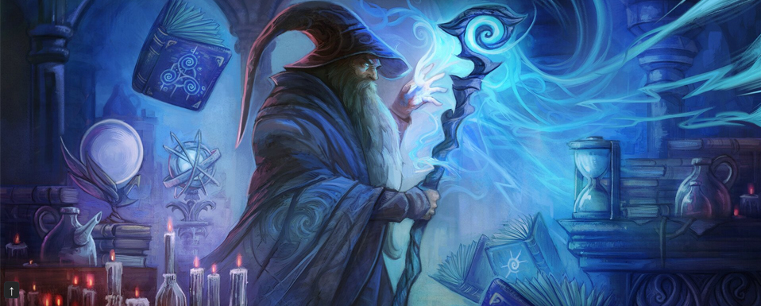

Nuestro Director
Nuestro Director
El Director Elion es una figura mítica dentro del Jardín de Balamb, conocido por su sabiduría y hazañas legendarias en el mundo de la magia y la guerra. En su juventud, lideró la batalla contra las fuerzas oscuras que amenazaban con sumir al mundo en la oscuridad, y fue él quien selló el Portal del Olvido, evitando la invasión de criaturas de otros mundos. Con un vasto conocimiento en conjuración y combate, Elion es un maestro que ha enseñado a generaciones de estudiantes no solo sobre magia, sino sobre el verdadero significado del liderazgo, la valentía y el sacrificio. A lo largo de los años, ha guiado a los estudiantes en el dominio de hechizos poderosos y técnicas de combate avanzadas. Sus lecciones van más allá de los libros: se basan en la experiencia, en cómo enfrentar lo inesperado y cómo superar los propios límites. Quienes tienen el honor de aprender bajo su tutela saben que no solo se les enseñará a dominar las artes mágicas, sino también a convertirse en verdaderos héroes.
